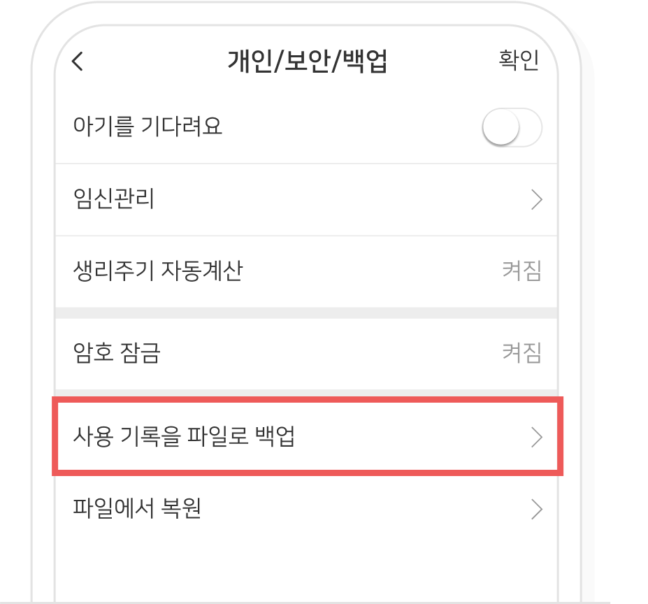
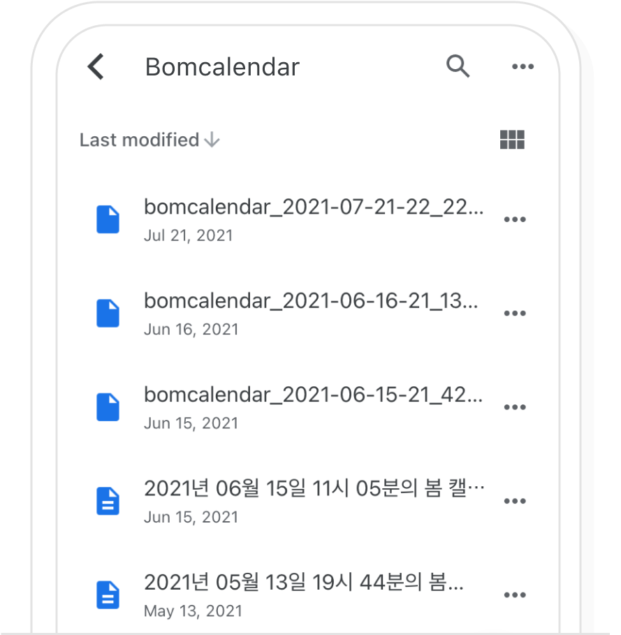
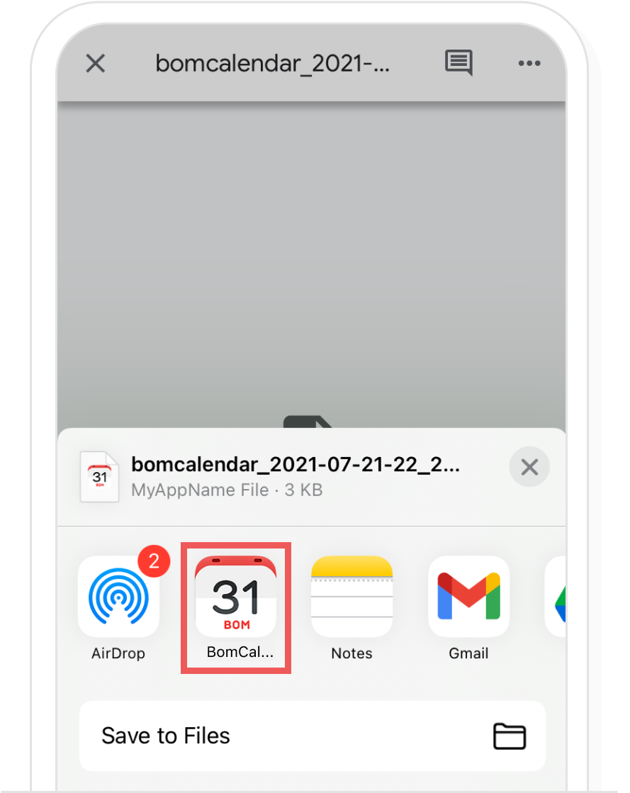

-
1
Send out my records
Please choose the application or the email to send out the back up.
Please choose the application or the email to send out the back up.

Please check whether usage history is attached to the email if you want to back up to email. Once you enter the email address to be backed up to the recipient, select 'Send'. The usage history file is saved to incoming mail as the email is sent.

If you want to back up to Cloud, check whether the account to be saved is correct and select 'Save'. Once you select 'Save', the usage history file is saved to Cloud.

-
2
Restoring from email
Select the email and choose the attached usage history file if you backed up to the email.

If you select Bom Calendar in the application you will be using, you can restore the usage history.

-
3
Restoring from cloud
Install the Cloud if you backed up to Cloud.
Please select 'Open in'

If you select Bom Calendar in the application you will be using, you can restore the usage history.
